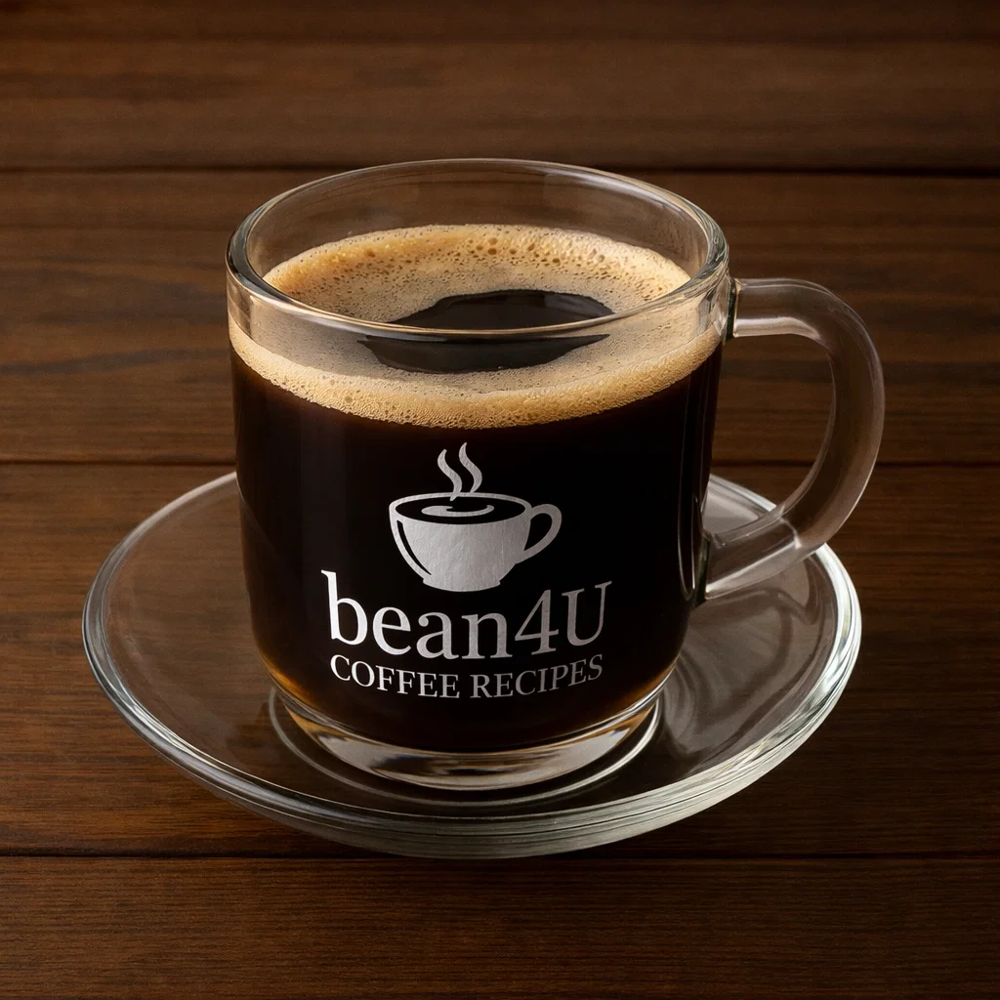

Café Zorro

Ingredients
- 2 shots espresso
- Hot water (about 60–80 ml)
Preparation
- Pull two espresso shots into a cup.
- Add hot water to dilute to the strength of an Americano but with a bolder flavor.
- Serve straight—often enjoyed without milk.
- youtube short quickly explaining it:
- short Explanation
Video from @espressoart
Channel